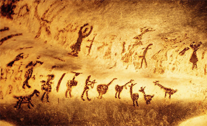

История компьютерной графики
 История развития компьютерной графики началось уже в 20 веке и продолжается сегодня. Не секрет то, что именно графика способствовала быстрому росту быстродействию компьютеров.
Можно считать, что первые системы компьютерной графики появились вместе с первыми цифровыми компьютерами. Сейчас ее рассматривают как средство, которое обеспечивает мощную взаимосвязь между человеком и компьютером, заставляя компьютер говорить с человеком на языке изображений.В 1961 году программист С. Рассел возглавил проект по созданию первой компьютерной игры с графикой. Создание игры («Spacewar!») заняло около 200 человек. Игра была создана на машине PDP-1.
В 1963 году американский учёный Айвен Сазерленд создал программно-аппаратный комплекс Sketchpad, который позволял рисовать точки, линии и окружности на трубке цифровым пером. Поддерживались базовые действия с примитивами: перемещение, копирование и др. По сути, это был первый векторный редактор, реализованный на компьютере. Также программу можно назвать первым графическим интерфейсом, причём она являлась таковой ещё до появления самого термина.
В середине 1960-х гг. появились разработки в промышленных приложениях компьютерной графики. Так, под руководством Т. Мофетта и Н. Тейлора фирма Itek разработала цифровую электронную чертёжную машину.
В 1964 году General Motors представила систему автоматизированного проектирования DAC-1, разработанную совместно с IBM.
В 1968 году группой под руководством Н. Н. Константинова была создана компьютерная математическая модель движения кошки. Машина БЭСМ-4, выполняя написанную программу решения дифференциальных уравнений, рисовала мультфильм «Кошечка»[1], который для своего времени являлся прорывом. Для визуализации использовался алфавитно-цифровой принтер. Существенный прогресс компьютерная графика испытала с появлением возможности запоминать изображения и выводить их на компьютерном дисплее, электронно-лучевой трубке.
В конце семидесятых в компьютерной графике произошли значительные изменения. Появилась возможность создания растровых дисплеев, имеющих множество преимуществ: вывод больших массивов данных, устойчивое, немерцающее изображение, работа с цветом. Впервые стало возможным получение цветовой гаммы. Растровая технология в конце семидесятых стала явно доминирующей. Наиболее знаменательным событием в области компьютерной графики было создание конце семидесятых персонального компьютера.
В 1977 году компания Apple создала Apple-II. Появление этого устройства вызывало смешанные чувства: графика была ужасной, а процессоры медленными. Однако персональные компьютеры стимулировали процесс разработки периферийных устройств. Конечно, персональные компьютеры развивались как важная часть машинной графики, особенно с появлением в 1984 году модели Apple Macintosh с их графическим интерфейсом пользователя. Первоначально областью применения персонального компьютера были не графические приложения, а работа с текстовыми процессорами и электронными таблицами, но его возможности как графического устройства побуждали к разработке относительно недорогих программ как в области CAD/CAM, так и в более общих областях бизнеса и искусства.
К концу 80-х программное обеспечение имелось для всех
сфер применения: от комплексов управления до настольных издательств.
В конце восьмидесятых возникло новое направление рынка
на развитие аппаратных и программных систем сканирования,
автоматической оцифровки. Оригинальный толчок в таких
системах должна была создать магическая машина Ozalid,
которая бы сканировала и автоматически векторизовала
чертеж на бумаге, преобразуя его в стандартные форматы.
Примерно в 1995 году в России появились свои разработчики мультимедиа
программ, зародились электронные издательства.
Качественный уровень программных продуктов, выполненных российскими
художниками и программистами не уступал, а иногда и превосходил качество
программ зарубежных авторов. Ещё одним направлением современной компьютерной
графики стал «Веб-Дизайн». С 1995 года во всём мире наблюдается
развёртывание глобальной мировой компьютерной сети — Интернет.
Теперь же уровень компьютерной графики просто поражает воображение. За какие-то сорок лет развитие индустрии достигло потрясающих размеров. Каждый год проводятся конференции SIGGRAPH, которые не перестают удивлять новинками. День за днем растет потребность в совершенствовании компьютерной графики, И, что самое интересное, предела развитию этой сферы не существует.
Данный сайт создан как учебное пособие по теме "Компьютерная рафика"
Автор гр.114 Василенко В. А.